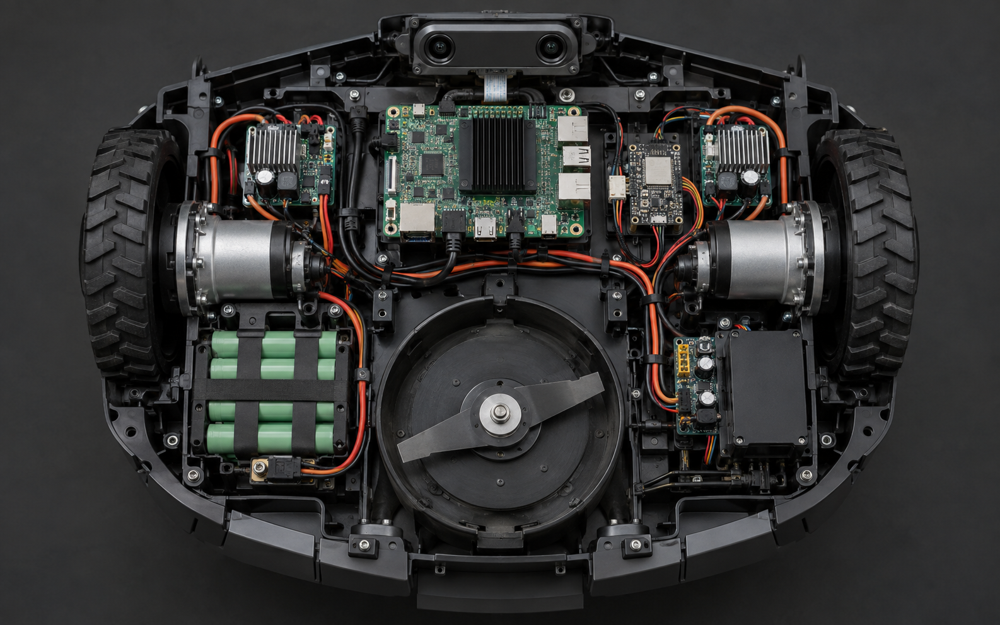
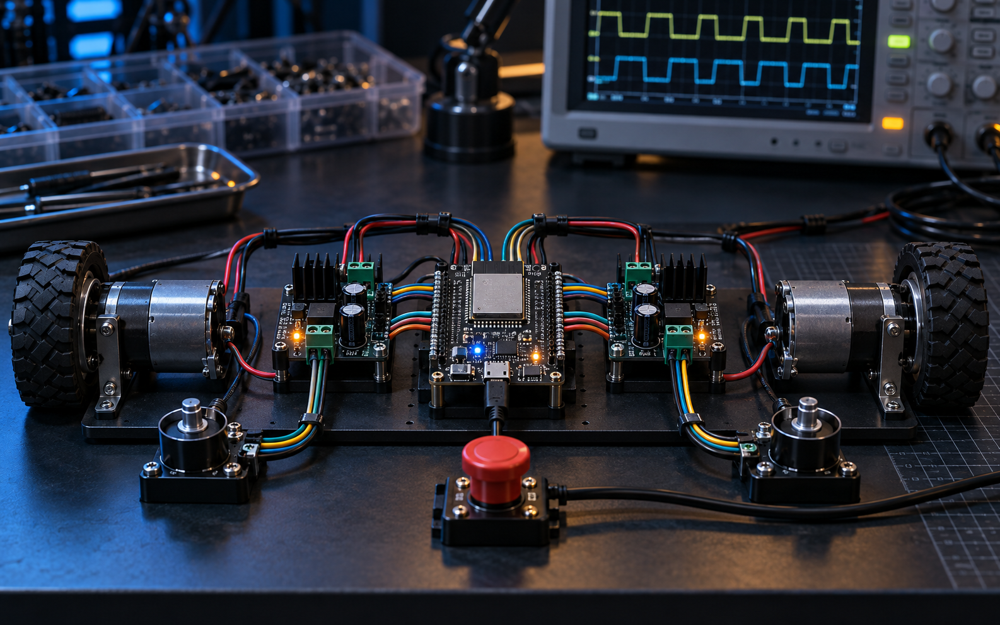

非结构化草坪
需要适应阴影、落叶、泥土、草石边界和光照变化。
PROJECT 01 · VISUAL PERCEPTION
一套以视觉感知为核心的庭院机器人方案。RDK X3 在端侧并行完成草坪分割和障碍检测，融合为可行驶区域与目标信息；ESP32 接收规划指令，完成底盘规控和安全执行。

01 / GOALS & CONSTRAINTS
项目面向家庭庭院中的低速自主作业。设计重点不是追求单项峰值，而是在算力、功耗、成本、安全和环境适应性之间建立可持续运行的平衡。
需要适应阴影、落叶、泥土、草石边界和光照变化。
关键感知与控制在设备侧完成，避免依赖网络连接。
计算、驱动与刀盘共享电池，峰值功耗和散热必须受控。
通信、感知或控制异常时优先停止行走与刀盘。
02 / VISUAL ARCHITECTURE
前视相机数据进入 RDK X3，双 BPU 分别运行分割和检测模型，CPU 完成后处理、融合与路径决策。ESP32 通过 UART 接收速度和刀盘指令，以 100 Hz 控制周期执行运动闭环。
03 / VISION HARDWARE
相机、视觉主控和规控板分层部署：RDK X3 获得稳定散热与短距离图像链路，ESP32 靠近电机驱动与安全输入，降低高电流执行系统对视觉信号的干扰。

01 / COMPUTING PLATFORM
旭日 X3 将通用计算、AI 加速与视频处理集成在一块紧凑平台中。相机数据无需上传云端，感知和决策链路都在设备侧闭环完成，降低网络依赖与响应等待。
RDK X3 官方资料 ↗
02 / CPU
四核 ARM Cortex-A53 最高运行至 1.5 GHz，负责 Linux 系统、传感器管理、双路推理任务编排，以及分割与检测结果融合。NEON SIMD 可加速图像预处理和几何运算，硬件多媒体单元进一步减少视频编解码对 CPU 的占用。

03 / BPU
两颗 BPU 基于 Bernoulli 架构，总计提供 5 TOPS 端侧 AI 算力。项目采用单帧单核调度：每个模型固定到独立 BPU，减少高频任务之间的资源竞争，并使两条感知链路持续并行。

04 / PERCEPTION DATA
分割模型给出连续空间结构，检测模型补充目标级语义。CPU 将两路输出投影到同一局部坐标系，再交给规划器生成安全路径。
逐像素区分草地、边界与不可通行区域。
识别人、宠物、树木与低矮散落物。
单帧示例数据用于说明输出结构，不代表最终模型实测指标。
05 / MODEL DESIGN
输入前视 RGB 画面，输出像素级类别掩码。训练场景覆盖草坪阴影、强光、落叶、泥土和草石边界，重点降低复杂光照下的区域误判。
输出目标类别、置信度与边界框。训练重点包括小型玩具、石块、宠物和低矮障碍，并通过连续帧一致性抑制瞬时误检。
10 / ESP32 MOTION CONTROL
RDK X3 以 20 Hz 下发线速度、角速度和刀盘状态，ESP32 以 100 Hz 运行双轮 PID。连续 300 ms 未收到视觉主控心跳时，ESP32 独立关闭行走与刀盘输出。
20 Hz 目标速度 / 模式 / 心跳
100 Hz PID / 状态机 / 看门狗
左右轮 / 刀盘 / 硬件制动

11 / SAFETY
安全链路不依赖单一视觉模型。机械传感器、ESP32 状态机与上层感知共同决定行走和刀盘使能，关键故障触发后必须人工确认或满足恢复条件才允许继续作业。
检测到高风险目标后减速、停车并保持安全距离。
硬件输入直接触发底层联锁，优先关闭刀盘。
ESP32 看门狗在失去上层心跳后停止全部执行机构。
侧翻、倾角超限或轮速异常时进入故障锁定。
预留安全电量返回充电区域，欠压时禁止启动刀盘。
独立急停链路切断驱动使能，不依赖软件响应。
12 / VISION PERFORMANCE
演示配置采用 640 × 384 INT8 分割模型和 640 × 640 INT8 检测模型。两路模型固定到独立 BPU 核，避免串行调度造成的累计等待，视觉结果以 20 Hz 频率送入局部规划。
13 / FIELD TEST
分割结果约束可行驶区域，检测结果提供动态安全边界。规划器同时读取两路信息，在树木、石块与临时障碍间持续修正轨迹。


14 / TERRAIN
视觉感知之外，底盘控制持续读取姿态与轮速信息，使转向和牵引策略适应不同地表条件。
项目仍在持续迭代。
返回首页 ↗